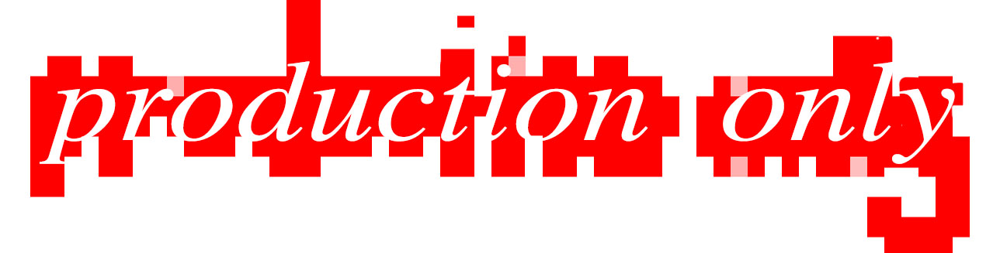
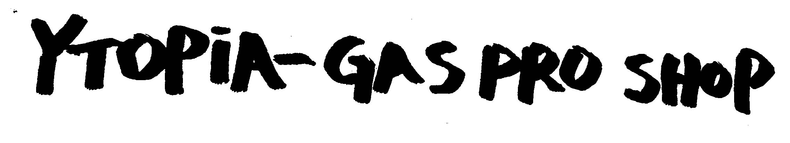

SPOTIFY APPLE MUSIC APRIL 2021
‘jane doe’ is the debut single from bloody undies, tracking the tragic tale of the song’s mysterious eponymous character…
credits: full production, recording and mixing

MARCH 2022
“ytopia” is the second song in the gas pro shop project, leaning even further in to the deeply ironic post-apocalyptic narrative of the ‘white diaspora’ on mars after the majority-minority shift in the united states leaves their fragile identities in pieces, ‘forcing’ a mass exodus to mars from none other than the bass pro shop pyramid in memphis, tn
credits: full production, recording and mixing
SPOTIFY APPLE MUSIC JANUARY 2020
‘first gen’ is the debut hip-hop album of chicago and connecticut based multi-media artist leevon.
credits: full production on tracks 1, 8, and 13, co-production on the rest, recording and mixing for all tracks

gibson bernath - website design information - last updated: september 2022